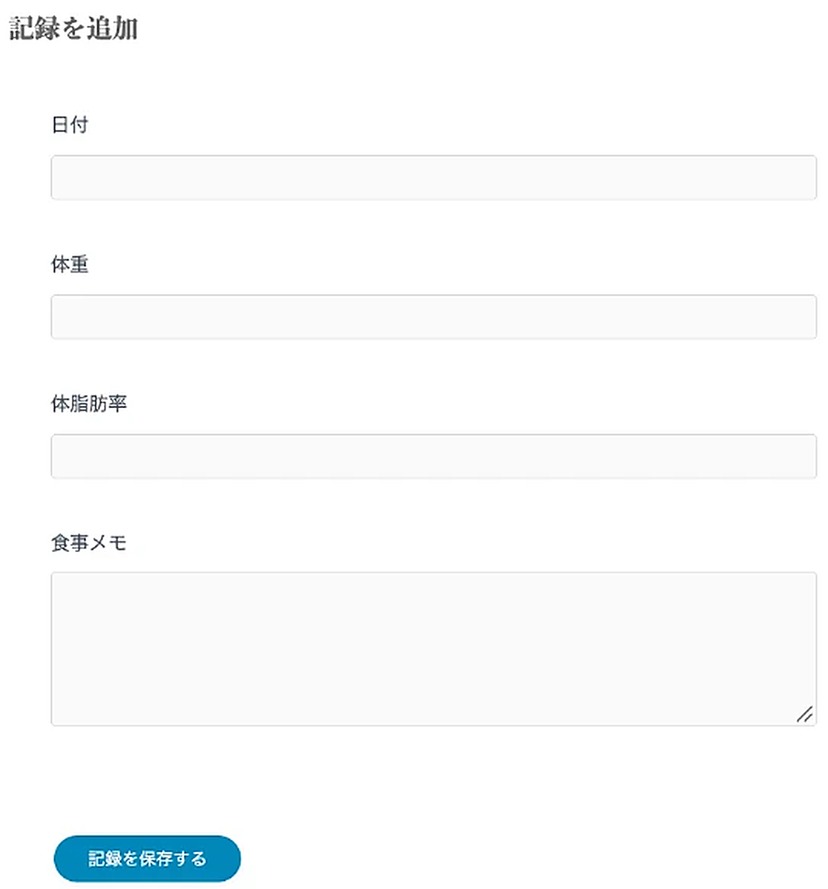
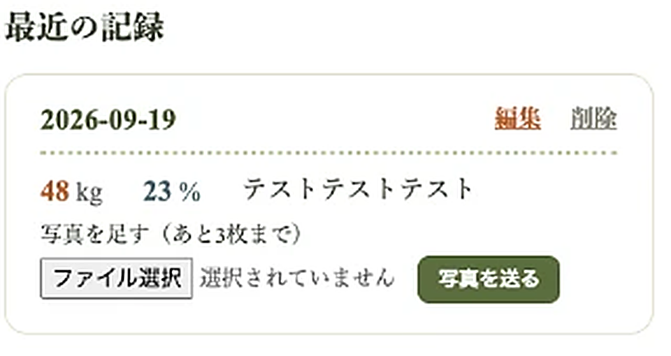
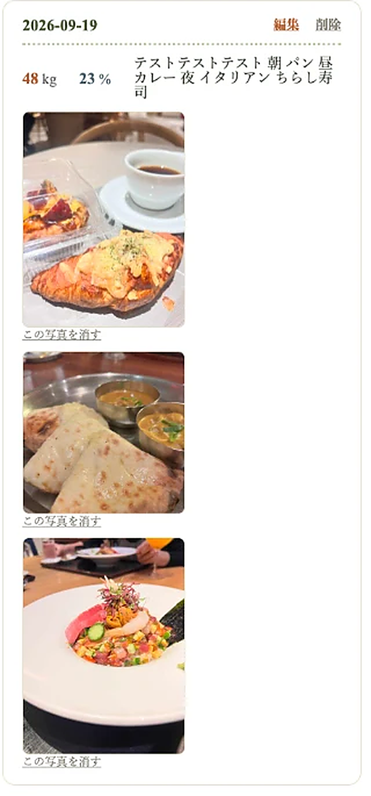
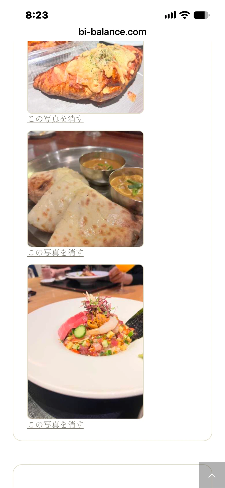
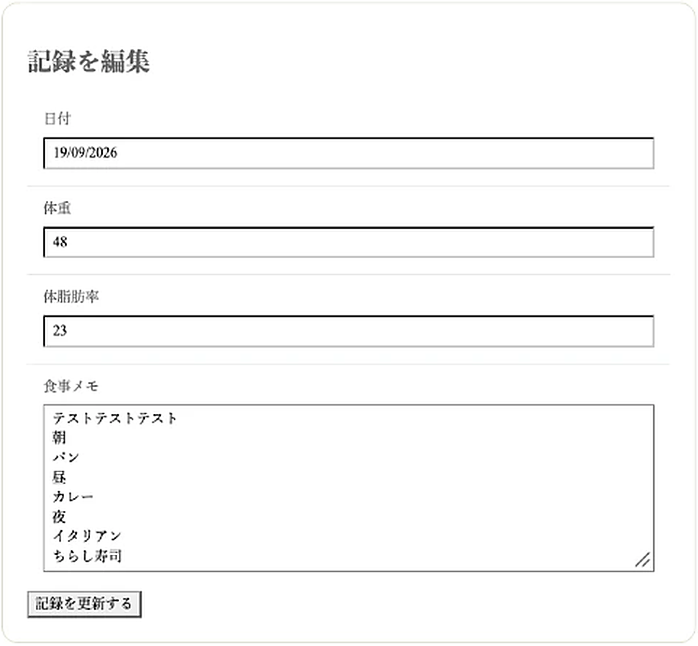
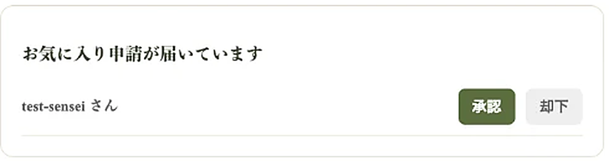
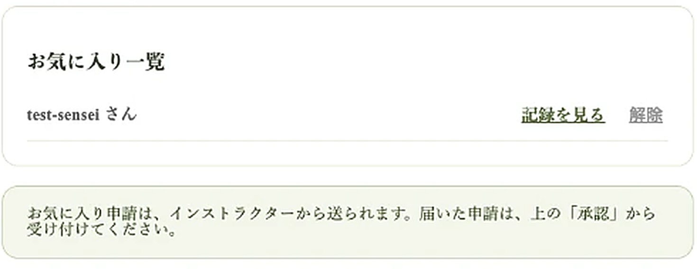
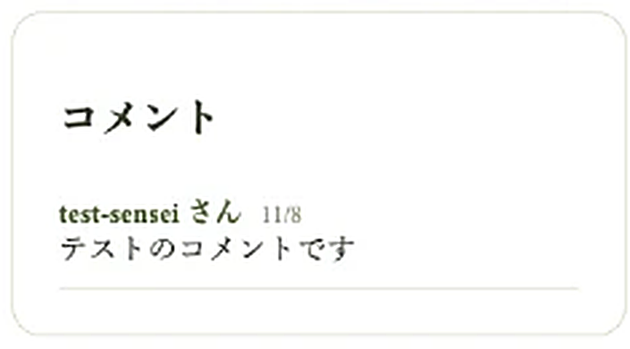

ダイエットグラフの使い方
ダイエットグラフの使い方の説明です。
こちらをお読みいただき、ご記入をお願いします。
ご不明な点がありましたら、お気軽に事務局にお問い合わせください。
事務局メールアドレス info@bi-balance.com
記録や写真を見られるのは、ご本人と、ご本人が「承認」したインストラクターだけです。ほかの方には見えませんので、安心してお使いください。
1 ログインする
①受講のご案内でお知らせした、ログインのページを開きます。
②ユーザー名とパスワードを入れて、ログインします。
③ログインしたら、「マイページ」が開きます。体重と体脂肪率のグラフが出ます。
2 記録を入れる
①マイページの下の「記録を追加」を開きます。
②日付・体重・体脂肪率・食事メモを入れます。
③「記録を保存する」を押します。

食事メモには、食べたものを書いておくと、あとで見返すときに役立ちます。
3 食事の写真を足す(1回の記録に3枚まで)
①記録を保存すると、「最近の記録」にカードが出ます。
②カードの中の「写真を足す(あと3枚まで)」の「ファイル選択」を押して、写真を選びます。
③「写真を送る」を押します。

- 写真は、1回の記録に3枚まで足せます。朝・昼・夜のように、好きな分け方で大丈夫です。
- スマホで撮った写真は、そのまま選んでください。送ると、自動で見やすい小さな大きさになります。
- 3枚になると、「写真を足す」の欄は出なくなります。

スマホで見ると、写真は縦に並びます。

4 写真を消す・記録を直す・消す
【写真を消す】写真の下の「この写真を消す」を押します。
【記録を直す】カードの右上の「編集」を押すと、日付・体重・体脂肪率・食事メモを直せます。直したら「記録を更新する」を押します。

【記録を消す】カードの右上の「削除」を押します。消すと、その記録の写真も一緒に消えます。元に戻せないので、気をつけてくださいね。
5 インストラクターに見てもらう(お気に入り)
担当のインストラクターから、「お気に入り」の申請が届きます。「承認」すると、そのインストラクターだけが、ご自身のグラフと写真を見られるようになります。
①マイページの右上の「設定」を押します。
②「お気に入り申請が届いています」に、インストラクターの名前が出ます。
③「承認」を押します。「却下」を押すと、インストラクターがアドバイスできなくなりますので、押さないでください。


あとからでも、「お気に入り一覧」の「解除」を押せば、そのインストラクターには見えなくなります。
6 インストラクターからのコメント
お気に入りにしたインストラクターは、記録にコメントを書けます。コメントは、マイページの右側の「コメント」の欄に出ます。

7 ご卒業されたあとについて
ご卒業されると、このグラフは使用できませんので、必要な場合は、別途メモなどしておくのをお勧めします。
(ビバランス部に加入された方は、このままご使用いただけます。)
ビバランス部については、こちらです。
ビバランス部の案内
ご質問ありましたら、ご遠慮なくお問い合わせください。
ビバランス事務局 info@bi-balance.com